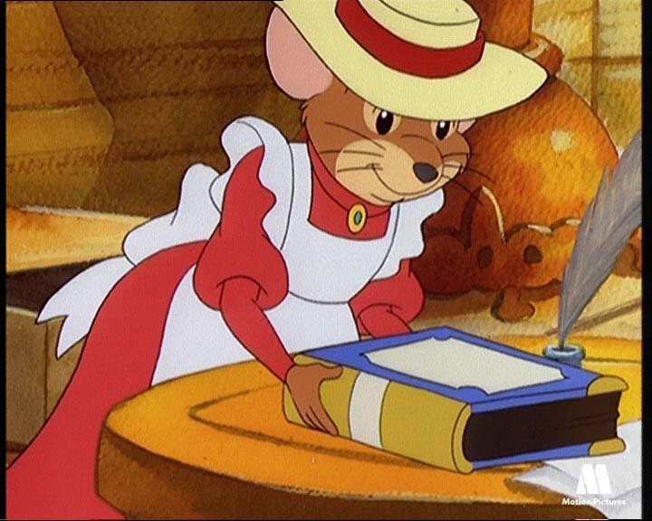
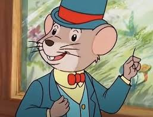

Sinopse
Emily e Alexander são dois camundongos primos que moram nos Estados Unidos. Eles viajam para diferentes
países do mundo, visitando primos, fazendo novos amigos e solucionando casos misteriosos, onde, na
maioria das vezes, o autor dos crimes é Sem Rabo Não Vale Nada. Uma curiosidade é que em alguns
episódios, são mostrados alguns acontecimentos da história, como por exemplo, a invenção do cinema, o
voo do Zeppelin, as Olimpíadas gregas, mitos da Grécia antiga, entre outros fatos.

Emily
É a camundonga do campo, vive num restaurante junto com Alexander, mas mora numa casa de campo, como
aparece em alguns episódios. Muito simpática, ela sempre arranja solução para os problemas, não
desconfia dos ratos (que não sejam o Sem rabo). É bem inteligente. Usa chapéu de laço, vestido vermelho
e avental branco. Sua dublagem brasileira é feita por Eleonora Prado nas falas e por Soraya Orenga no
tema de abertura.

Alexander
É o camundongo da cidade, mora num restaurante e é um comilão. Muito tagarela, gosta de falar para seus
primos de outras partes do mundo sobre a tecnologia novaiorquina e sempre pronuncia seu nome completo
quando vê camundongos mulheres atraentes. Não gosta muito dos ratos. Usa chapéu, paletó e calça verdes,
gravata borboleta vermelha e camisa amarela. Sua dublagem brasileira é feita por Tatá Guarnieri nas
falas e por Nil Bernardes no tema de abertura. A versão americana é feita por Terrence Scamell.

Sem Rabo Não Vale Nada
Ele é um rato sem rabo (o nome já diz tudo), meio desajeitado para se disfarçar, que sempre usa rabos
falsos que nunca ficam no lugar. É um famoso ladrão internacional muito esperto, pois se aproveita de
crendices populares para poder roubar, mas é sempre descoberto pelos camundongos, graças ao seu rabo que
se solta e fica por aí, e Sem Rabo acaba sendo preso ou consegue fugir. O grande sonho do Sem Rabo é
fazer um grande roubo e se aposentar para comer muito queijo. Ele é um grande vilão se disfarçou já de
Ladrão-da-Meia-Noite e Renê Belloq personagem de Rayders of Lost Ark (segundo maior rival de Indiana
Jones, o maior rival de deste é Toht). No Brasil, dublado por Francisco Brêtas e Paulo Wolf.